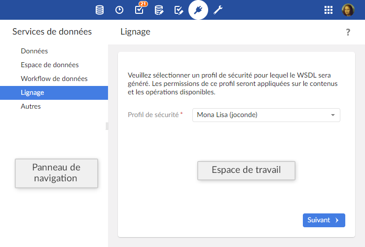

Introduction aux services de données
Présentation
Fonction du service de données
Un service de données est :
un web service standard qui permet d'interagir avec TIBCO EBX®.
Les services de données SOAP peuvent être générés dynamiquement à partir d'un modèle de données dans la section 'Services de données'.
un service REST qui permet d'interroger le contenu du référentiel EBX®.
Un service RESTful prédéfini ne nécessite pas d'interface de service, il est auto-descriptif par l'intermédiaire des méta-données retournées.
Ils peuvent être utilisés pour accéder à une partie des fonctionnalités disponibles par l'interface utilisateur.
Lignage
Le lignage établit des profils de droit d'accès utilisés par les services de données. Quand les services de données accèdent aux interfaces WSDL, ils utilisent les profils de droit d'accès définis par ce mécanisme.
Glossaire
Voir aussi
Utilisation de l'interface utilisateur de la section Services de données

Note
Seuls les utilisateurs autorisés peuvent accéder à cette section via la 'Perspective avancée'.
Concepts apparentés
 Sommaire du guide utilisateur
Sommaire du guide utilisateur